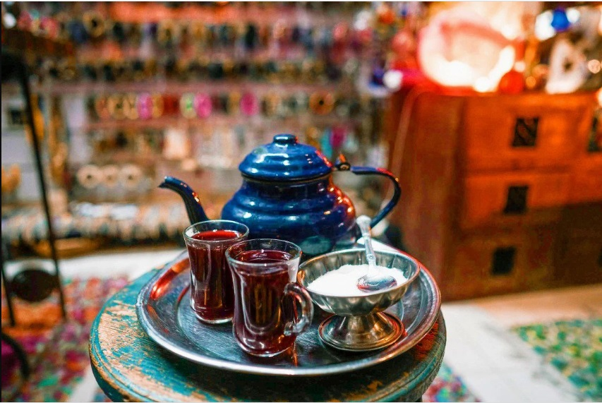

أتت الكلمة من (الفارسية چای) يعتقد البعض أن الشاي أتى من الهنود الحمر وهذه المعلومة خاطئة، فتشير مصادر البحث كالموسوعة البريطانية وغيرها إلى أن أصل الشاي هو بلاد الصين. ومنها انتشر تناوله في كثير من مناطق آسيا منذ خمسة آلاف عام. أول من زرع واستخدم الشاي هم الصينيون، وتذكر الروايات الصينية بأن الملك شينوق Shennong كان مغرماً برعاية الأعشاب وجمعها والتداوي بها وكان يحب شرب الماء الساخن بعد غليانه، وقد ترك بعض أوراق الشاي في الحديقة وبالمصادفة حملت الريح ورقة من الشاي الجاف إلى قدح الماء الساخن الذي اعتاد ان يحتسيه وهو جالس في الحديقة كنوع من أنواع العلاج بالماء فلاحظ الملك تغير لون الماء فتذوق طعم المنقوع واستساغ طعمه ودأب على تناوله هو ومن في معيته ما أشاع استخدامه في الصين وخارجها. أما العرب والأوروبيون وغيرهم فقد ذكرت الموسوعة العربية العالمية ما يشير إلى أن الشاي لم يُعرف عند العرب في عصر الجاهلية ولا في صدر الإسلام ولا في العصر الأموي ولا العباسي، وربما جاء شربه بعد هذا التاريخ حيث لم يوجد تاريخ محدد لدخول الشاي وشربه في المنطقة العربية وفي العراق خصوصاً ليكون من أشهر المشروبات وأكثرها شعبية. ولم ينتشر ويصبح معروفاً في العالم إلا في القرن السابع عشر وما بعده، وقد كانت أول شحنة من الشاي قد وصلت أوروبا في عام 1610 وهو أول عهد الأوربيين بالشاي.